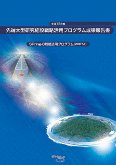
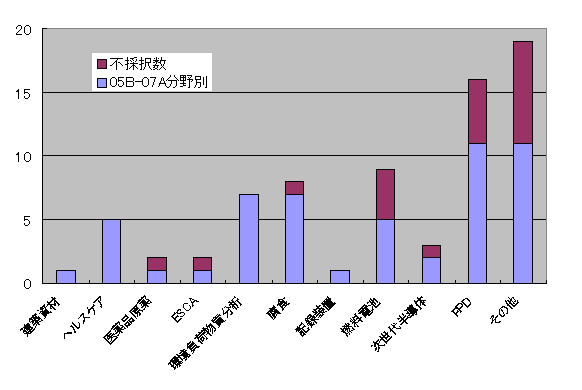
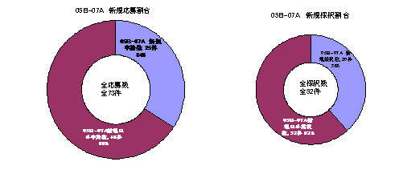
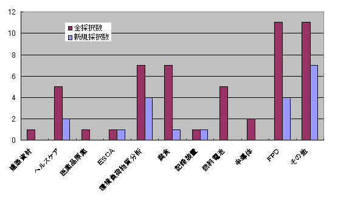
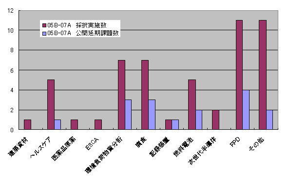
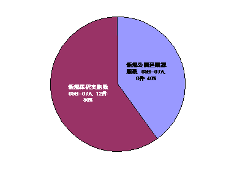

1. 概要2. 公募の内容
3. 成果公開の考え方
4. 緊急実施型利用制度の流れ
5. 結果
6. 緊急実施型課題の総括
7. 先端大型研究施設戦略活用プログラム実施報告
8. 課題利用報告書
大型放射光施設SPring-8では、昨年（平成17年度）より、（財）高輝度光科学研究センター（JASRI）において、 我が国が有する最先端の大型研究施設について、その汎用性にふさわしい広範な利用者・領域により、 施設の能力を最大限に引き出すような質の高い研究開発を実施し、新技術・新産業を創出していくために、 戦略的な活用を推進する事を目的にして、先端大型研究施設戦略活用プログラムを実施している。 戦略活用プログラムでは、現行の2回／年の利用のサイクルが長いため、 産業界のニーズに合わないとの産業界からの要望に答えるため、 2005B期から継続的な施策として随時利用できる緊急実施型利用制度を設けて運用している。 このうち本成果報告書に掲載されている課題利用報告書は、 2007A（3月）に緊急実施型利用制度で採択された課題である（但し、利用報告書公開日延期申請許可となった課題は除いている）。
戦略活用プログラムでは、即応性を必要とする産業利用に対応するため、緊急実施型利用制度を設けて運用している。 募集する課題は、通常の戦略活用プログラムと同様、「新規利用者による研究」、 「新領域研究」と「重点領域研究」に大別され、「新規利用者による研究」、「新領域研究」、 「重点領域研究」の順に、より高い優先度を置いている（詳しい内容については、 これまでの先端大型研究施設戦略活用プログラム成果報告書を参照のこと）。
本プログラムにおいてSPring-8を利用して得られた成果は、 所定の利用報告書にまとめて提出される。この利用報告書は公開とするが、 他の一般課題等とは異なり、利用者は利用報告書とともに「利用報告書公開日延期申請書」を提出することにより、 施設運用機関との協議を通じて、 特許出願・特許取得等に必要な準備期間（2年間程度）として利用報告書の公開日を延期することが出来るのが特徴である。
- 受付
(財)高輝度光科学研究センターの相談窓口（産業利用推進室）を通じて、 コーディネータ等に相談する。具体的には、相談申込書に記載の上、あるいは相談申込書の記載要領についても相談の上、 相談窓口に問合せる。 - 緊急実施の可否
個々の緊急実施型利用枠の４4週間前までに寄せられた利用相談の中から、 当該プログラムの趣旨および緊急実施型利用として実施する必要性の観点に基づき、 (財)高輝度光科学研究センターが緊急実施の可否を判断する。なお、本プログラムの趣旨に合致する利用は、優先度の高い順に、- 新規利用者による利用
- 新領域における利用（コンクリート等建築資材関連、ヘルスケア関連、医薬品原薬関連、 高エネルギーESCA（光電子分光）によるデバイス開発等、環境負荷物質微量分析関連、耐腐食構造材関連、高密度記録装置関連など）
- 重点領域における利用（燃料電池研究、次世代半導体研究、フラットパネルディスプレイ(FPD)研究の3分野を指定）
- 緊急性・優先度以外の採用基準
前項の緊急実施型利用として実施する必要性および前項の優先度の他に、以下の採用基準の観点から判断される。- 科学技術における先端性を有すること
- 特許化、製品化等を通じて新技術、新産業創出に資すること
- 社会経済ニーズに合致すること
- 研究手段としてのSPring-8の必要性
- 実験内容の技術的な実施可能性
- 利用申請および安全審査
上述の緊急実施の可否判断により緊急実施型課題実施が内定した利用相談については、利用申請書の提出手続きに入る。 提出された利用申請書に対して(財)高輝度光科学研究センターでは実験内容の安全性をはじめとした安全審査が行なわれ、 問題が無ければ緊急実施型課題として実施手続きへと進む。 - 利用者支援
緊急実施型課題の実施に当たっては、コーディネータ、産業利用支援グループが主に中心となり、 課題毎に担当者をおき、BL担当者の協力の下、全所的に利用者支援を実施している。 支援の内容は、重点分野における実験環境の整備、 コーディネータ及び支援スタッフによる実験企画・準備、実験実施、実験解析に至る技術支援、 および個々の実験に必要な経費などの財政支援からなる。 - 利用実験
本報告は、2007A(3月)に緊急実施型利用制度で採択された課題である。
- 2007A（3月）における緊急実施型課題の結果
応募・採択結果
採択/応募総数：8課題/14課題(採択率57％)
産業界：7課題/11課題
学・官：1課題/ 3課題
- 採択課題の内訳
産業界の新規利用者（初回のみで2回目該当なし）は3課題で、その企業数は3社。また、新領域は4課題、重点領域が2課題、 その他2課題である(なお、新規利用者と新領域，重点領域，その他とは別々に分類しているため重複している課題もある)。
表１に示す通り、受付から実施決定までに要した期間が1週間に集中しており、 緊急実施型利用制度が定着しつつあることを示している。また、実施決定から実施までに要した期間は、 4～5週間と1ヶ月強を要し、実施までの期間の短縮化が課題として残る。
表1 緊急実施型課題実施までの期間(課題数)
受付～実施／不実施の決定 実施決定～実施 1週間 9 2週間 1 3週間 1 4週間 1 3 5週間 1 5 6週間 1 合計 14 8
緊急実施型課題の総括戦略活用プログラムでは2005年度開始から2007A（3月）終了までの期間、緊急実施型利用制度を実施してきた。 この期間の緊急実施型課題各々の具体的内容については 2005B、2006A、2006B利用期毎の報告書および本成果報告書を参照して頂くこととして、 ここでは緊急実施型課題の全体を振り返って総括したい。
- 応募状況
2005Bから2007Aまでの応募総数は73課題（内訳は、05B：22，06A:12，06B：25，07A：14）である。 そのうち採択された課題総数は52課題（内訳は、05B：18，06A:10，06B：16，07A：8）である。 緊急実施型課題全体を通じた平均採択率は71％となり、 戦略活用プログラム本体の採択率とほぼ同等であることから 緊急実施型課題も戦略活用プログラム本体と同程度の関心の高さであることと、 また、通年に渡って課題申請を行う潜在的利用者が多く存在することを示している。
図１は不採択課題を含む新領域・重点領域別の課題数を分類したものである。 図１に示す通り、研究開発競争が活発なフラットパネルディスプレイ（FPD）の課題が多いことから、 SPring-8のもつ最先端の分析・解析技術が熾烈な研究開発競争現場の課題解決に有効であることを明確に示すとともに、 本施策である緊急実施型課題が狙い通り、旨く機能していることを実証している。
また、図２に示す通り新規利用者および企業の割合を調べてみると、新規利用者・企業が応募・採択共に3分の1の割合となり、 戦略活用プログラム本体と比べ、新規利用者・企業の割合が大きいのも一つの特徴である。 これら新規利用者・企業の採択課題を遡って調べると、 本施策である戦略活用プログラムによって増員されたコーディネータによる貢献が大きいこととして分析することができる。 研究会、研修会、講習会、報告会をはじめとした積極的かつ活発な普及・啓蒙活動や 日常的な電話あるいはweb経由の問い合わせへの真摯な対応と、 即応性を有している緊急実施型課題の相乗効果の結果であると考えている。 また、図３に示す通り新領域・重点領域別に関係なく新規課題が分布していることから、 まだ依然として多くの産業界に於いて潜在的利用者が存在することを示す結果となっている。
図１ 新領域・重点領域分類別の課題数（不採択課題を含む）
図２ 新規利用者・企業の応募および採択割合
図３ 新領域・重点領域分類別の新規利用の割合
- 報告書の公開延期
図４は、報告書の公開延期を新領域・重点領域別に分類して示したものである。 分野業界に関係なく採択課題全体の約3割の課題が知財取得あるいは事業適用のために報告書の公開延期を希望しており、 公開延期制度は産業界のニーズに適していること、企業に於ける事業上の成果に直結していることを示す結果である。 なかでも、図５に示す通り新規利用者・企業の採択課題のうち、約4割の課題が報告書の公開延期を希望するという結果となり、 新規利用にも関わらず、実質的な成果を取得していることは驚異的ともいえる結果となっている。
図４ 新領域・重点領域分類別の公開延期課題数
図５ 新規利用者・企業の採択課題に占める公開延期課題の割合
- まとめ
緊急実施型利用制度の実施を通じて、①通年に渡って課題申請を行う利用者が多く存在すること、 ②多くの産業界に於いてSPring-8を利用していない潜在的利用者が未だ多く存在すること、 ③新規利用に於いても事業上の成果に直結する実質的な成果を取得し得ることなど、多くの目に見える成果を得たことは、 大きな収穫であったと考えている。
これら多くの成果が得られるまでには、 コーディネータおよび利用支援要員による日々の活動と多大な労力が大であることは自明であり、この場を借りて感謝する。
最後に、文部科学省およびJASRI担当者など、施策の遂行にご尽力いただいた方々に感謝したい。
先端大型研究施設戦略活用プログラム実施報告SPring-8利用者情報Vol.12 No.3から転載 古宮 聡
課題利用報告書（この成果報告書に掲載されている課題利用報告書は、2007A（3月）に緊急実施型利用制度で採択された課題である （但し、利用報告書公開日延期申請許可となった課題は除いている））
高性能ＭＯＳトランジスタのためのＳｉＮストレス印加膜の構造評価 小椋 厚志 明治大学 GIXS, SAXSによるDLC-Si膜の構造解析 伊関 崇 (株)豊田中央研究所 次世代半導体リソグラフィー用反射防止膜の表面解析（膜密度） 境田 康志 日産化学工業(株) 六価クロム測定手法の検討 望月 恵子 日本ビクター(株) XAFSによるタンタル酸リチウム(LT)にドープした鉄の状態分析 国谷 譲治 信越化学工業(株) 内容については、「先端大型研究施設戦略活用プログラム成果報告書(2007A)緊急実施型課題」をご覧下さい。
送付を希望される方は、連絡先（氏名、所属、〒住所、E-mail）をご記入の上、
事務局 support@spring8.or.jp までE-mailでご連絡ください。
- 応募状況